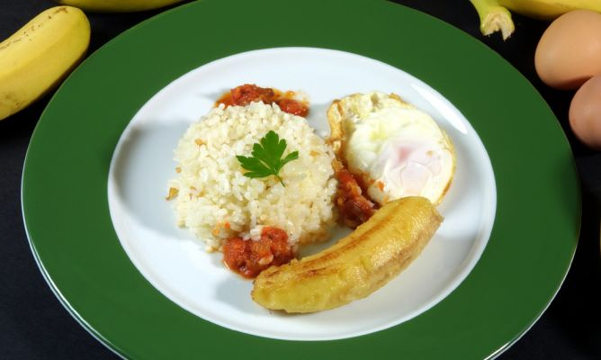

Arroz Cubano

Cocer el arroz durante 20 minutos
Preparar ingredientes
Cortar dientes de ajo
Aceite
Panceta
En una sartén freir los huevos con platano
Pasar los huevos fritos por harina
Untar cuantro tazas con aceite y volcar el contenido del perol
VOLVER AL INICIO